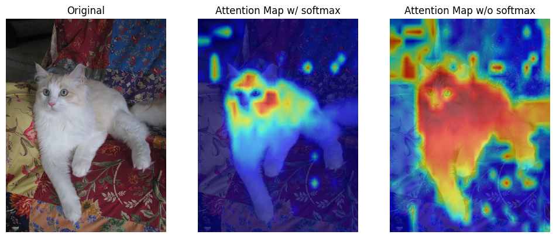
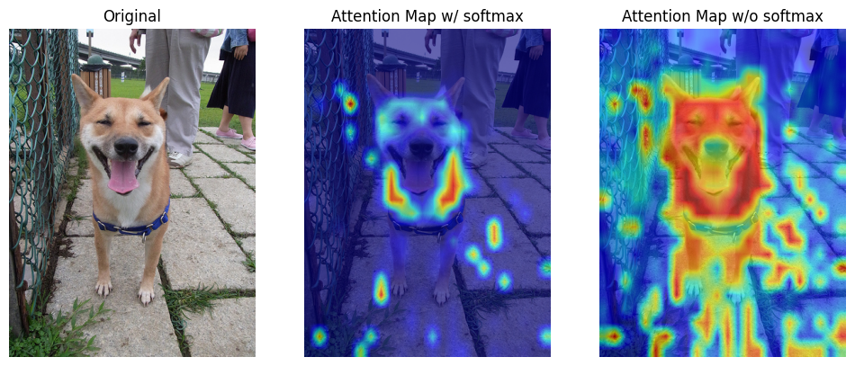
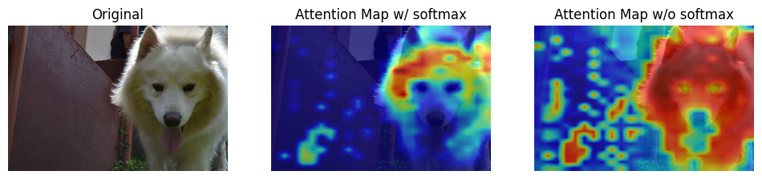
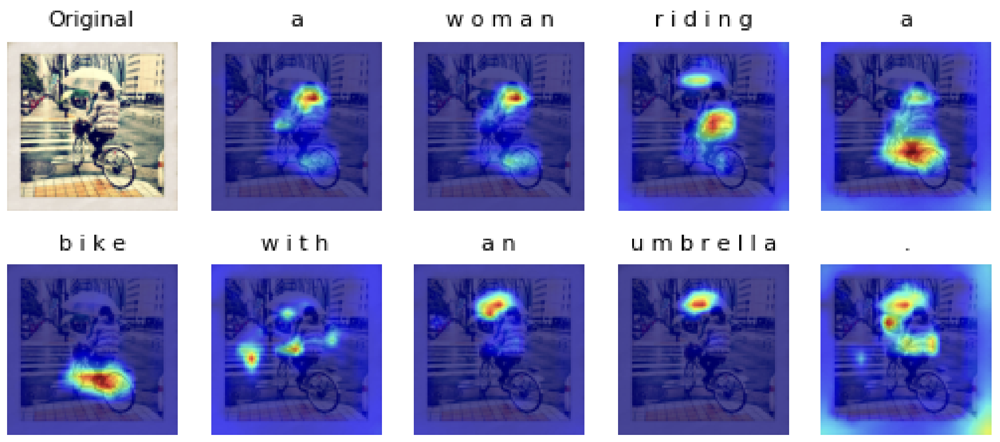
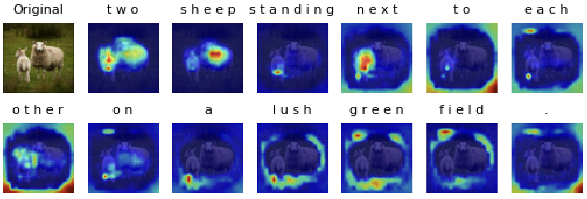
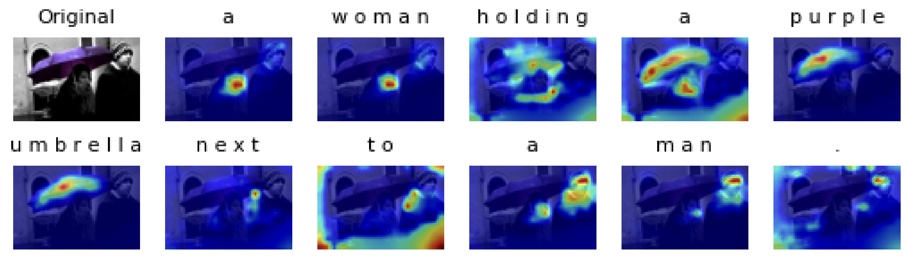

Transformer Attention Visualization
In this project, I analyzed the attention map in transformer architecture in two differnet tasks, image classification and image captioning.
For image classification, I visualized the attention map between the [class] token (as query vector) and all patches (as key vectors) from the last multi-head attention layer of vision transformer by comparing the weights of the attention layer. For image captioning, I visulaized cross-attention between images and generated caption from transformer decoder.
The results show that attention mechanism indeed learn the relation between language/text and visual information.
| Label | Attention Map on image classification |
|---|---|
| cat |  |
| dog |  |
| dog |  |
| Attention Map on image captioning |
|---|
|  |
|  |
|  |